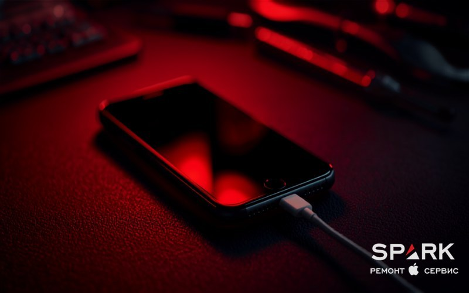

iPhone не заряжается: почему так происходит и что делать

Поставили iPhone на зарядку, а он не реагирует — или показывает молнию, но процент не растёт? В большинстве случаев виноват не сам телефон, а кабель, адаптер или забитый пылью разъём, и это решается за пять минут дома. Но бывает и так, что причина глубже — износ, программный сбой или последствия попадания влаги. В этом гайде мы по порядку разберём все причины и покажем, что можно сделать самому, а когда лучше сделать диагностику в сервисе.
- Чаще всего виноват не телефон, а кабель, адаптер или забитый ворсом разъём — проверьте их в первую очередь.
- Чистите порт только деревянной зубочисткой или пластиком, никогда металлом; жидкости внутрь не лить.
- Force Restart и обновление iOS лечат программные сбои зарядки и не стирают данные.
- Остановка на 80% — обычно функция «Оптимизированная зарядка», а не поломка.
- Если не помогло или телефон был в воде — нужна диагностика: разъём, аккумулятор или контроллер питания.
Сначала исключаем простое: кабель, адаптер и розетка
Прежде чем грешить на сам iPhone, проверьте звено, которое выходит из строя чаще всего, — аксессуары. Кабель и адаптер изнашиваются куда быстрее телефона: жилы внутри переламываются у штекера, контакты окисляются, а дешёвые «неоригиналы» нередко работают нестабильно с первого дня. По нашей статистике в сервисе SPARK, добрая половина обращений «iphone не заряжается от зарядки» решается заменой кабеля или блока питания.
Проверьте другой кабель, адаптер и розетку
Действуйте методом исключения. Возьмите заведомо рабочий комплект (например, от другого устройства Apple) и подключите iPhone к нему. Поменяйте по очереди три звена: сначала кабель, затем адаптер питания, затем саму розетку или USB-порт. Если телефон ожил на другом кабеле — проблема была именно в нём, и менять нужно его, а не нести аппарат в ремонт.
- Кабель — осмотрите оба штекера и оплётку: заломы, потёртости, почернение у основания — повод заменить.
- Адаптер — попробуйте более мощный (20 Вт и выше), особенно если iPhone «заряжается медленно».
- Источник — зарядка от ноутбука или слабого USB-хаба идёт в разы дольше, чем от розетки. Это нормально, а не поломка.
Важно не путать две разные проблемы. Если телефон вообще не подаёт признаков жизни и не реагирует на зарядку, это уже ближе к ситуации, когда iPhone не включается, — там логика диагностики немного другая, и начинать стоит со снятия диагностики. А если аппарат разряжается за пару часов, но заряжается нормально, читайте отдельный материал про то, почему быстро садится батарея: разряд и зарядка — это не одно и то же.

Загрязнённый или повреждённый разъём зарядки
Разъём Lightning (или USB-C на новых моделях) — это открытое отверстие, куда круглый день попадает пыль, ворс из карманов и микрочастицы грязи. Со временем они спрессовываются в плотную «пробку» на дне порта, и контакты кабеля просто не достают до контактов телефона. Характерный признак: кабель приходится прижимать под углом или шевелить, чтобы зарядка пошла, а сам штекер заходит не до конца.
Как аккуратно почистить разъём дома
Чистка порта — едва ли не самая частая бесплатная «починка». Главное правило — никакого металла. Иглой или булавкой легко замкнуть контакты или содрать защитное покрытие, и тогда из простой грязи получится реальная поломка.
- Полностью выключите iPhone перед чисткой.
- Возьмите деревянную зубочистку или пластиковую палочку — ничего металлического.
- Посветите фонариком в порт: чаще всего на дне виден серый спрессованный комок ворса.
- Аккуратно, без усилия, поддевайте и вытаскивайте грязь короткими движениями от дна к выходу.
- Можно дополнительно продуть порт баллончиком со сжатым воздухом (не ртом — со слюной попадёт влага).
На большинстве моделей iPhone разъём (нижний шлейф) — отдельный недорогой узел, и его замена обходится заметно дешевле, чем кажется владельцам. Не нужно менять «всю плату» из-за разбитого порта.
Программный сбой, iOS и «оптимизированная зарядка»
Иногда железо в полном порядке, а виновата система. iOS управляет всем процессом зарядки, и зависший фоновый процесс может «подвесить» контроллер так, что молния на экране есть, а процент стоит на месте. Хорошая новость: лечится это без отвёртки.
Принудительная перезагрузка (Force Restart)
Это первое, что стоит сделать при любом непонятном поведении. Force Restart не стирает данные — он просто жёстко перезапускает систему. Шаги зависят от модели:
- iPhone 8, SE 2-го/3-го поколения, X, XR, XS, 11, 12, 13, 14, 15, 16, 17: нажмите и быстро отпустите «Громкость +», нажмите и быстро отпустите «Громкость −», затем зажмите боковую кнопку и держите до появления логотипа Apple (примерно 10–20 секунд).
- iPhone 7 и 7 Plus: одновременно зажмите «Громкость −» и боковую кнопку, держите до логотипа Apple.
- iPhone 6s, SE 1-го поколения и старше: одновременно зажмите кнопку «Домой» и кнопку питания (боковую или верхнюю — в зависимости от модели), держите до появления логотипа Apple.
Обновите iOS
Зайдите в «Настройки» → «Основные» → «Обновление ПО». Apple регулярно правит ошибки управления питанием, и установка свежей версии нередко возвращает корректную зарядку. Если iPhone почти разряжен и не запускается для обновления — сначала дайте ему набрать хотя бы 5–10 % на проверенном кабеле.
«Оптимизированная зарядка» и порог 80 %
Очень частый ложный «диагноз»: «айфон не заряжается до конца, стоит на 80 %». В большинстве случаев это не поломка, а функция «Оптимизированная зарядка аккумулятора». iPhone изучает ваш график и специально придерживает заряд на 80 %, дозаряжая до 100 % прямо к вашему обычному времени пробуждения — чтобы батарея меньше изнашивалась. Проверьте «Настройки» → «Аккумулятор» → «Состояние и зарядка аккумулятора». Если хотите разово зарядить до 100 %, можно нажать на уведомление о зарядке и отложить оптимизацию.
Крайняя программная мера перед сервисом — восстановление через компьютер (Finder на Mac или iTunes на Windows) в режиме Recovery/DFU. Учтите: кнопка «Восстановить» полностью стирает iPhone. Если данные важны и резервной копии нет, не делайте этого сами — лучше сначала обратиться за восстановлением данных или в сервис.
Когда дело в железе: температура, MagSafe, износ и вода
Перегрев или мороз
iPhone защищает аккумулятор и сознательно замедляет или вовсе ставит зарядку на паузу, если ему слишком жарко или холодно. Летом на солнце или зимой с улицы телефон может показывать молнию, но не заряжаться. Решение простое и безопасное: уберите его из чехла, дайте полежать в комнате 15–30 минут и попробуйте снова. Греть феном, батареей или класть в холодильник категорически нельзя — резкий перепад температуры и конденсат только навредят.
Беспроводная зарядка MagSafe и Qi
Если не работает именно беспроводная зарядка, а от кабеля всё в порядке — проблема, как правило, не в телефоне. Проверьте: снят ли толстый чехол или магнитный держатель (попсокет) либо кольцо-подставка, точно ли по центру лежит аппарат, не перегрелась ли площадка. Важна и толщина чехла: беспроводная зарядка передаёт энергию через зазор, и преграда толще примерно 3–4 мм (особенно с металлической пластиной или магнитом внутри) уже глушит сигнал катушки. MagSafe и Qi плохо переносят металлические вставки в чехлах и карты-кошельки на задней крышке. И наоборот: если кабель заряжает, а беспроводная площадка молчит при любом положении, возможен дефект приёмной катушки внутри iPhone — это уже к мастеру.
Износ аккумулятора и контроллер питания
После 2–3 лет ежедневной зарядки ёмкость батареи падает, а вместе с ней растут странности: медленная зарядка, отключения на холоде, «не заряжается до конца». Если в разделе «Состояние аккумулятора» появилась рекомендация «Сервис» либо максимальная ёмкость опустилась примерно до 80 % и ниже, батарею пора менять. Сложнее, когда выходит из строя контроллер питания на плате (микросхема, которая управляет зарядкой). Тогда iPhone может вообще не реагировать на кабель, греться в одной точке или заряжаться рывками. Отличить контроллер от обычного разъёма мастер может на диагностике: к телефону подключают лабораторный блок питания и смотрят потребляемый ток — если при подключении кабеля плата вообще не берёт ток или уходит в короткое замыкание, дело в плате, а не в шлейфе. Контроллер диагностируют и ремонтируют только в сервисе на компонентном уровне. Если же дело именно в том, что заряд тает на глазах, а зарядка идёт нормально, — это отдельная история, см. почему быстро садится батарея.
Последствия попадания воды
Влага — коварная причина. iPhone может проработать после купания несколько дней, а потом перестать заряжаться из-за окисления контактов разъёма или дорожек на плате. Если телефон контактировал с водой, не ставьте его на зарядку мокрым (это ускоряет коррозию и может вызвать короткое замыкание) и не сушите феном или в рисе. Правильный порядок действий описан в гайде iPhone упал в воду — что делать: главное — быстро отдать аппарат на чистку платы, пока окисление не пошло дальше.
Когда пора в сервис и что сделают в SPARK
Если вы прошли все шаги выше — сменили кабель и адаптер, почистили порт, перезагрузили и обновили iOS, дали телефону прийти в комнатную температуру, — а iPhone по-прежнему не заряжается или заряжается медленно, причина аппаратная. Дальше уже нужны приборы и опыт, а не догадки.
SPARK — независимый сервис Apple в Одессе, работаем с 2017 года, за плечами более 32 000 ремонтов и рейтинг 4.8★ в Google. Мы не «официальный сервис Apple», но это и плюс: чиним то, от чего в авторизованных центрах отказываются, в том числе компонентный ремонт платы. На зарядку чаще всего влияют именно такие узлы:
- чистка и замена разъёма зарядки (нижнего шлейфа) Lightning/USB-C;
- замена изношенного аккумулятора с проверкой состояния;
- ремонт или замена контроллера питания на плате;
- чистка платы от окисления после попадания влаги;
- ремонт приёмной катушки беспроводной зарядки MagSafe/Qi.
Начинаем всегда с диагностики — она покажет, в чём именно дело, без «пальцем в небо». На работы даём гарантию до 12 месяцев. Можно записаться на ремонт iPhone заранее или просто привезти аппарат — а если остались вопросы, наши контакты и адрес есть на сайте, подскажем ещё до визита.
Коротко о главном
В большинстве случаев фраза «iphone не заряжается» означает не поломку телефона, а проблему с кабелем, адаптером или забитым разъёмом — и решается дома за несколько минут. Пройдите проверки по порядку: смените аксессуары, почистите порт зубочисткой, перезагрузите и обновите iOS, дайте аппарату остыть. Если ничего не помогло, не тратьте нервы и не лезьте внутрь сами — причина аппаратная, и тут нужна диагностика. Привозите iPhone в SPARK: найдём настоящую причину и вернём нормальную зарядку с гарантией.
iPhone так и не заряжается?
Привозите в SPARK — независимый сервис Apple в Одессе с 2017 года. Бесплатно почистим порт, проведём диагностику и точно скажем, в чём дело. Гарантия на ремонт до 12 месяцев.
Записаться на ремонтКакая у вас модель iPhone?
Проголосуйте — узнайте, что приносят чаще всего, и цену ремонта вашей модели.